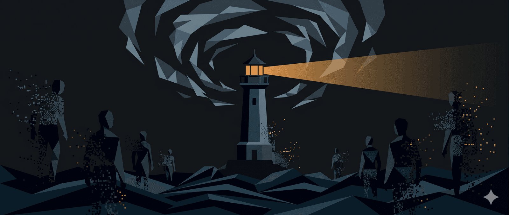

Mấy hôm nay, tôi đã là đối tượng của những cuộc tấn công cá nhân từ một số tài khoản nặc danh bằng thủ đoạn doxing những thông tin bịa đặt hoặc không do tôi viết ra. Tiếng Anh gọi là cyberbully, hay gaslighting. Thông thường tôi không hồi đáp hoặc tham gia vào những hành vi thiếu văn minh này để tránh bị phân tâm khỏi công việc. Tuy nhiên, hôm nay tôi xin phép được làm rõ một số thông tin để các bạn ở đây trên trang này nắm được sự thật. Các bạn không cần chia sẻ với ai.
Cuộc đời của tôi đã được ghi lại trong cuốn hồi ức ‘ Giấc mơ Kangaroo ’ và ‘ Kangaroo Dreams ’ mới xuất bản. Những thành bại đều được thuật lại khá chi tiết trong sách. Đại học NSW và UTS quản lí hai trang web về profile của tôi [1-2]. Và, tôi cũng có một trang blog cá nhân [3]. Đó là những thông tin chánh thức. Xin trích lại vài thông tin chánh thức như sau:
■ Tôi tốt nghiệp hai bằng tiến sĩ
Một bằng là cấp PhD về ứng dụng di truyền dịch tễ học / thống kê học, với chủ đề nghiên cứu loãng xương. Luận án có tới 3 giáo sư làm hướng dẫn: một người về nội tiết học, một người về xương khớp học, và một người về dịch tễ và thống kê học. Luận án của tôi được chọn để trao giải thưởng luận án xuất sắc trong năm. Một bằng là cấp DSc (Doctor of Science), cao nhứt trong hệ thống giáo dục Anh-Úc, về loãng xương. Dĩ nhiên, tôi còn có vài bằng cấp khác thấp hơn cấp tiến sĩ.
Xin nói thêm là bằng DSc chỉ dành cho những ai đã tốt nghiệp PhD tối thiểu là 10 năm và có những thành tựu xuất sắc (chứ không phải bằng cấp danh dự). Tôi hãnh diện là cho tới nay tôi là người Việt đầu tiên ở Úc được trao bằng DSc.
■ Tôi là giáo sư đại học
Có những người chọn cách mỉa mai bằng việc đặt chữ “giáo sư” trong ngoặc kép. Một số người thản nhiên nói rằng tôi tự xưng là ‘giáo sư’. Với tôi, đó chỉ là một hành vi nhỏ nhặt.
Nhưng tôi xin nói rõ: Tôi tự hào là người gốc Việt đầu tiên được bổ nhiệm làm giáo sư tại Khoa Y, Đại học New South Wales, một trong những trường y hàng đầu của Úc và thế giới.
Tôi từng được bổ nhiệm làm Giáo sư (kiêm nhiệm) Dịch tễ học và Thống kê học (Adjunct Professor of Epidemiology and Biostatistics) của Khoa Y (Sydney) thuộc Đại học Notre Dame Australia.
Tôi còn là người Việt đầu tiên và một trong số hiếm hoi giáo sư tại Úc được phong danh hiệu Distinguished Professor và Endowed Professor, một vinh dự hiếm có trong giới học thuật ở phương Tây.
Những cột mốc đó là nguồn cảm hứng và niềm tự hào chung cho cộng đồng người Việt tại Úc, cũng như cho tất cả những ai tin rằng nỗ lực và đam mê có thể vượt qua mọi rào cản.
■ Tôi là Fellow của vài tổ chức khoa học uy tín quốc gia và quốc tế
Ấy vậy mà có người tỏ ra “rất am hiểu” khi nhận xét rằng chức danh Fellowship của Hội đồng Quốc gia Nghiên cứu Y khoa và Sức khỏe Úc (NHMRC) chỉ là … “hậu tiến sĩ”. Muốn hạ thấp như vậy thì cứ tự nhiên, tôi không buồn lòng đâu.
Nhưng xin thưa thẳng thắn: Nếu quí vị đã từng nỗ lực và đạt được chức danh Fellowship cao nhứt của NHMRC, thì mới có tư cách nói về mức độ khó khăn và giá trị thực sự của nó. Cho đến nay, tôi vinh dự là người gốc Việt đầu tiên và duy nhứt được trao Fellowship cấp cao nhứt trong hệ thống Fellowship của NHMRC, tương đương với danh hiệu nghiên cứu hàng đầu quốc gia. Trước đó, tôi cũng là người Việt đầu tiên nhận Senior Research Fellowship. Những cột mốc này không phải ngẫu nhiên, mà là kết quả của nhiều thập niên cống hiến không ngừng nghỉ trong nghiên cứu y khoa.
Khi chưa thực sự hiểu rõ, tốt hơn hết là dành thời gian tìm hiểu kĩ lưỡng, thay vì vội vàng hạ thấp người khác. Sự thật luôn rõ ràng hơn những lời mỉa mai thiếu cơ sở. Tôi tự hào về hành trình của mình, không chỉ vì cá nhân, mà còn vì nó góp phần khẳng định rằng người Việt, dù xuất phát điểm ra sao, hoàn toàn có thể vươn tới đỉnh cao học thuật ở Úc và trên thế giới.
Tôi đã tạo ra những cột mốc để thế hệ sau phấn đấu và nhắm tới.
■ Với tôi, bằng cấp và chức danh không phải là điều quá quan trọng, vì nó chỉ là tờ giấy A4 và bước đầu.
Làm gì với những tấm bằng đó mới là vấn đề. Một trăm người có bằng PhD thì may ra chỉ có 1 người đạt chức danh Professor, và 1000 người tốt nghiệp PhD thì chỉ có 1 người đạt chức danh Fellow. Mà, chức danh đó cũng chẳng có ý nghĩa gì nếu không có những đóng góp có ý nghĩa. Những đóng góp thực sự cho y học mới là điều tôi trân trọng. Tôi tự hào là người gốc Việt đã có những đóng góp quan trọng và tiên phong trong lãnh vực loãng xương. Những đóng góp đó đã được ghi nhận qua hàng loạt giải thưởng trong chuyên ngành loãng xương và nội tiết học. Người ta (như Scopus, ISI, ScholarGPS, v.v.) xếp tôi vào nhóm ‘top 0.05%’ trên thế giới trong lãnh vực y học.
Hơn thế, tôi còn lãnh đạo các dự án lớn như DOES và Vietnam Osteoporosis Study (VOS), những nghiên cứu qui mô giúp lấp đầy khoảng trống tri thức về loãng xương ở người Việt và khu vực châu Á-Thái Bình Dương. Những đóng góp đó được ghi nhận qua hơn 15 giải thưởng quốc gia và quốc tế uy tín, và nhiều nhiều chức vụ và chức danh khác.
Tôi cũng tự hào khi đã góp phần đưa tên tuổi Việt Nam được biết đến rộng rãi trong cộng đồng khoa học chuyên ngành loãng xương và nội tiết thông qua các vai trò lãnh đạo trong nhiều tập san khoa học và hiệp hội chuyên môn quốc tế. Cho tới nay, tôi là người Việt Nam đầu tiên được bầu làm Fellow của American Society for Bone and Mineral Research (ASBMR).
■ Với Việt Nam, trong suốt 25 năm qua, tôi đã có nhiều đóng góp thiết thực.
Tôi đã giúp cho hàng vạn đồng nghiệp trên khắp nước nâng cao năng lực khoa học. Cho tới nay, rất nhiều bạn trong và ngoài nước ghi nhận rằng những bài giảng của tôi đã giúp cho họ thành công trong học hành và nghiên cứu.
Không chỉ truyền đạt kĩ năng và kiến thức, tôi đã thực hiện nhiều nghiên cứu y khoa ở trong nước, góp phần nâng cao chuyên ngành loãng xương trong vùng. Tôi đã đóng góp hơn 70 bài báo khoa học cho Việt Nam. Tôi đã hướng dẫn cho 7 nghiên cứu sinh ở trong nước.
■ Tôi giảng và hướng dẫn về phân tích dữ liệu cho đồng nghiệp
Tôi hoàn toàn có tư cách chuyên môn và bằng cấp để giảng dạy trong lãnh vực dịch tễ học và thống kê học. Như nói trên, tôi là Giáo sư (kiêm nhiệm) về Dịch tễ học và Thống kê học của Đại học Notre Dame, Australia. Tôi là người trực tiếp làm nghiên cứu từ vai trò phụ tá đến giám đốc chương trình khoa học, chẳng lẽ tôi không đủ tư cách để giảng về phương pháp nghiên cứu? Trong thực tế, tôi được đồng nghiệp trên thế giới công nhận là một chuyên gia hàng đầu, là bậc thầy về lãnh vực này, và được bổ nhiệm vai trò ‘gác cổng khoa học’ cho các tập san nổi tiếng trên thế giới như BMJ, Lancet, JCEM, JBMR, Osteoporosis International, Bone, v.v. Tôi là người đề ra chánh sách và qui định công bố trên JBMR.
Tôi tự hào rằng đã đem những kĩ năng và kiến thức đó về Việt Nam, giúp cho nhiều đồng nghiệp. Tôi tự hào rằng những chương trình giảng dạy về lãnh vực này ở Việt Nam là tốt nhứt và thực tế nhứt trên thế giới — và đó là nhận xét của đồng nghiệp.
Nếu tìm được khoá học nào (về phân tích dữ liệu, dịch tễ học, công bố quốc tế, v.v.) chất lượng hơn chúng tôi, xin quí vị hãy chia sẻ. Thay vì chỉ trích vu vơ, quí vị hãy làm tốt hơn chúng tôi: hãy tổ chức các khoá học để nâng cao năng lực khoa học cho đồng nghiệp.
■ Không cần dựa vào những gì tôi viết hay nói, hãy nhìn vào những gì tôi làm cho đồng nghiệp và người không quen để biết tôi là người như thế nào.
Chỉ có những đồng nghiệp trong chuyên ngành mới có tư cách đánh giá chuyên môn của tôi. Những ai đã từng gặp gỡ, làm việc trực tiếp hoặc cộng tác với tôi đều có cái nhìn rõ ràng và chân thực nhứt về trình độ chuyên môn, những thành tựu đã đạt được, cũng như nhân cách của tôi.
Ngược lại, khi chưa từng tiếp xúc, chưa từng trao đổi, chưa từng có bất kì cơ hội nào để hiểu biết trực tiếp mà đưa ra những phán xét nặng nề, công kích cá nhân là điều rất xấu, không công bằng, phi chuyên nghiệp, và một dạng hallucination.
■ Tôi không phải là người hoàn hảo.
Cũng như bất cứ ai, tôi cũng có những thiếu sót, sai sót, sai lầm, sơ suất. Như tôi đã thẳng thắn chia sẻ trong cuốn hồi ức “Giấc mơ Kangaroo” và “Kangaroo Dreams”, một số rất ít (chính xác là 2) công trình nghiên cứu của tôi và đồng nghiệp đã phải đính chánh. Không có chuyện bài báo thu hồi. Một vài note trước đây thiếu trích dẫn nguồn đầy đủ vì chủ quan, nhưng tôi đã chỉnh sửa (và cảm ơn các bạn đã chỉ ra). Một số phát biểu ngày xưa nếu được quay lại tôi sẽ không nói hay nói khác.
Tất cả những thiếu sót và sai lầm đó tôi không che giấu mà đã công khai thừa nhận trong sách hoặc trong các bài viết trên báo.
■ Tôi có “nổ” và “dạy đời” không?
Có người cho rằng tôi “nổ” và “dạy đời” khi về Việt Nam. Đó là một phán xét chủ quan, và tôi xin trả lời một cách rõ ràng và chân thành như sau: Tôi không cần phải nổ hay dạy đời ai cả; tôi chia sẻ. Tôi chia sẻ qua những bài viết, cuốn sách, video, phỏng vấn.
Những gì tôi đã chia sẻ đều dựa trên sự thật được ghi nhận công khai, qua các bằng chứng cụ thể từ các tổ chức uy tín trong giới học thuật và y khoa Úc cũng như quốc tế. Đó không phải khoe khoang, mà là niềm tự hào chánh đáng về hành trình từ một người tị nạn đến những đóng góp có giá trị thực sự cho cộng đồng (dù tôi không nói ra).
Tôi hãnh diện, chứ không nổ. Và tôi chia sẻ để truyền cảm hứng rằng niềm tin, kiên trì và đam mê có thể vượt qua mọi rào cản. Nếu ai đó vẫn cho rằng đây là “nổ”, thì có lẽ họ chưa thực sự hiểu giá trị của những cột mốc đó, hoặc chưa từng trải qua hành trình tương tự.
Tôi từng hoặc đang giữ nhiều vai trò lãnh đạo: giám đốc trung tâm nghiên cứu; viện trưởng viện nghiên cứu; giám đốc labo nghiên cứu; chủ tịch hội đồng bổ nhiệm giáo sư; chủ tịch hội đồng trao giải thưởng; biên tập và/hoặc chuyên gia bình duyệt cho các tập san nổi tiếng; chuyên gia bình duyệt tài trợ khoa học từ Âu châu, Mĩ châu sang Á châu; thành viên sáng lập vài hiệp hội y học. Với những vai trò đó, tôi không đủ tư cách để chia sẻ về quản lí khoa học hay sao?
Qua vụ việc, tôi rút ra ba bài học ở đời. Và, tôi xin mạn phép chia sẻ và lời khuyên.
■ Bài học 1: Bớt phán xét
Tôi tin rằng, cách mỗi người chọn để đánh giá, nhận xét về người khác không chỉ nói lên điều gì về đối tượng bị đánh giá, mà phần lớn phản ảnh chính tâm thế, tầm nhìn, mức độ trưởng thành và nhân cách của người đưa ra nhận xét.
Trên mạng xã hội và một số phương tiện truyền thông chánh thống và không chánh thống xuất hiện nhiều bài viết đề cập đến tôi, trong đó có cả thông tin đúng và không đúng. Những nội dung này phần lớn nằm ngoài khả năng kiểm soát của tôi. Thú thiệt đa số là lần đầu tôi mới thấy mấy bài đó. Các bạn đó (tác giả) không có hỏi tôi trước khi viết bài, và tôi cũng không biết họ là ai. Tôi cảm ơn tất cả. Chẳng hạn như có giải thưởng mà tôi chỉ biết sau khi người ta công bố trên báo (tôi rất cảm kích) nhưng thông tin về nơi làm thì sai vì thiếu cập nhựt. Tôi không thể đính chánh vì người ta đã ghi trong hồ sơ mà tôi chưa thấy. Thôi thì tôi chịu lỗi vậy.
Nếu quí vị hoặc các bạn có bất kì nghi vấn nào, cần làm rõ thông tin, hoặc mong muốn trao đổi trực tiếp, tôi luôn sẵn sàng tiếp nhận và trả lời một cách minh bạch, chân thành nhứt có thể. Việc công khai đưa ra những nhận định chưa được kiểm chứng, thiếu cơ sở hoặc sai sự thật trên các nền tảng công cộng không chỉ thiếu tính chuyên nghiệp, mà còn phản ảnh một thói quen đáng tiếc đã được tiền nhân nhắc nhở từ hơn một thế kỉ trước: đó là thói “nói xấu sau lưng”, “nói mà không biết”, và thói “nồi cơm Nhan Hồi”.
Tôi rất mong tất cả chúng ta cùng giữ gìn văn hóa ứng xử lành mạnh, tôn trọng sự thật và dành cho nhau sự tử tế tối thiểu trong giao tiếp, đặc biệt trong môi trường học thuật và chuyên môn.
■ Bài học 2: Hãy xây dựng thay vì đả phá
Có người chẳng biết dựa vào đâu mà nói rằng tôi thích xa hoa, như ăn uống những nơi ‘sang trọng’. Trời đất ơi! Ăn nhậu ở quán dê bụi (ngồi ngoài đường) mà gọi là xa hoa? Mà, tôi có chọn đâu, ai chọn cho tôi đó thôi (tôi không thích dê). Sao họ không thấy tôi thường la cà ở mấy quán cháo lòng, bánh tầm và hủ tíu? Chẳng lẽ như vậy là xa hoa? Cuộc đời tôi đã thưởng thức qua các nhà hàng Michelin ở New York, Paris, Bangkok đến quán bánh tằm miệt quê rồi, thì không có gì làm cho tôi thấy sang hay hèn cả.
Xin nhắc rằng ở Úc tôi là cấp giám đốc và giáo sư, và người ta có qui chế cho tôi về đi lại và lưu trú. Chẳng hạn như khi đi công tác trên 7 tiếng đồng hồ, viện mua vé hạng thương gia cho tôi, còn dưới thời gian đó thì tôi đi vé hạng phổ thông. Nhưng về Việt Nam thì đôi khi tôi phải bỏ tiền túi, nhưng không ai biết hay muốn biết.
Những lời đồn đó có làm chúng tôi buồn? Nếu nói ‘không’ là chúng tôi không thật lòng. Nhưng chúng tôi mừng vì có nhiều bạn từng biết chúng tôi đã lên tiếng công đạo.
Tôi luôn lấy làm tự hào khi được góp phần đưa tên tuổi Việt Nam vươn xa trên bản đồ khoa học thế giới. Những công trình nghiên cứu, vai trò lãnh đạo quốc tế, và các hoạt động hỗ trợ đồng nghiệp trong nước là niềm vui và động lực lớn đối với tôi. Tôi hãnh diện vì đã và đang có những đóng góp thiết thực, ý nghĩa cho chính quê hương mình.
Tôi nhận thấy một sự khác biệt rất rõ ràng: trong khi một số người chọn cách dựa vào những nguồn thông tin không chánh thống, thiếu kiểm chứng để công kích, vu khống và xúc phạm người đang ngày đêm phấn đấu nhằm làm cho hai chữ “Việt Nam” thêm phần rạng rỡ, thì tôi vẫn kiên định với con đường xây dựng, cống hiến và tôn trọng sự thật.
Đó chính là ranh giới căn bản: một bên là xây dựng và nâng tầm cho đồng nghiệp, một bên là phá hoại bằng lời nói vô căn cứ và sự thù hằn cá nhân. Tôi biết vài bạn muốn đối tượng của mình phải gục ngã và lấy đó làm niềm vui và lẽ sống. Xấu lắm. Xấu ghê gớm. Hãy trưởng thành và suy nghĩ tích cực. Hãy biết rằng chính bạn có thể là nạn nhân trong tương lai.
Tôi vẫn mở lòng với tất cả những ai muốn trao đổi chân thành, xây dựng. Còn lại, tôi chọn tiếp tục làm việc, tiếp tục cống hiến, vì đó mới là cách thực sự làm cho Việt Nam ngày càng sáng hơn.
■ Bài học 3: Hãy làm điều tích cực
Sự thật là tôi (và BS Nguyên và BS Thạch) bị gaslighting lâu rồi nhưng tôi không muốn nói ra. Vào những năm đầu thập niên 2000, khi những khoá học đầu tiên và miễn phí ở ĐHYDHCM người ta phao tin rằng “hai người này có agenda đằng sau.” Trời ơi! Làm việc với tấm lòng thành mà bị nghi kị, có nơi nào kì cục như nơi này. Mấy năm sau, khi học viên đề nghị ban tổ chức thu học phí tượng trưng, thì lời đồn chuyển sang: “hai tay này đã thất nghiệp bên Úc nên về đây kiếm chút cháo.” Xin nói thêm rằng ‘hai tay này’ là tôi và BS Nguyên. Tôi nói đùa với Nguyên là “anh em mình còn chưa biết bị mất việc, mà ở Việt Nam có người đã biết trước”. Rồi mấy năm gần đây, lời đồn dành cho tôi và anh Thạch là “bọn này chỉ về đây kiếm chút cháo.” Anh em tôi nghe mà chỉ cười buồn. Sao họ không hỏi chúng tôi đã giúp được gì về mặt tài chánh cho cơ quan tổ chức và chuyên môn cho học viên.
Có cần làm thống kê để biết tôi đã đem lại bao nhiêu tỉ đồng cho các đại học và bệnh viện ở Việt Nam? Có cần ‘khoe’ ra tôi đã đóng bao nhiêu tiền thuế cho Nhà nước (tôi đóng thuế cao hơn các bạn trong nước nghen). Có cần kể ra 77 công trình khoa học đã công bố mà tôi đã đóng góp cho quê nhà? Có cần kể ra những đóng góp liên tục và thiết thực (không nói suông) cho quê nhà suốt 25 năm qua. Nếu liệt kê cụ thể thì chắc cả chục trang, và chi tiết thì cả ngàn trang. Có cần ‘khoe’ ra những gì tôi làm trong vùng để nâng cao cái visibility và hai chữ “Việt Nam” trong thế giới y học ở Á châu? Mấy cái này là không cân đo đong đếm được đâu. Xin thưa rằng tôi đã về quê và đóng góp từ những năm đất nước này còn đầy khó khăn, chớ không phải kha khá như bây giờ đâu. Cái thời mà tôi ngủ trong khách sạn chung với chuột và gián thì chắc một số bạn đang bôi nhọ tôi còn chưa ra đời.
Nói cho cùng thì những hành vi đó phản ảnh (một phần) cái tánh xấu của một số người Việt mà tiền nhân đã nhắc tới từ lâu, nhưng nó cũng có thể xuất phát từ giáo dục gia đình và giáo dục học đường mất phương hướng. Hậu quả là xã hội có những con người không biết kính trên nhường dưới là gì, và họ chọn đấu tố (từ thời Cải Cách Ruộng Đất) làm phương tiện để thể hiện cái tâm tánh GATO. Những ai đang dành thời gian vu khống, xúc phạm hay cố tình bôi nhọ tôi trên mạng xã hội, tôi chỉ mong các bạn hãy dành chút công sức đó để làm tốt hơn chúng tôi thay vì ngồi sau bàn phím gõ những điều tiêu cực và không có căn cứ.
Cuộc sống còn nhiều việc ý nghĩa hơn để làm lắm. Thay vì dành thời gian để xúc phạm, vu khống người khác trên mạng, thay vì đau khổ và hằn học thấy người khác thành đạt hơn mình, hãy biến năng lượng đó tích cực hơn: hãy tích cực chia sẻ kiến thức và kĩ năng với đồng nghiệp; hãy tổ chức những khoá học về năng lực khoa học; hãy làm video để lan toả kiến thức chuyên môn; hãy viết sách chia sẻ kiến thức; hãy tích cực tương tác ngoài đời để học hỏi thêm; và quan trọng nhứt là hãy phấn đấu để phát triển bản thân, để trở thành phiên bản tốt hơn của chính mình. Tôi tin rằng khi ấy, họ sẽ chẳng còn cần phải bận tâm đến người khác nữa.
■ Lời kết
Tôi không thích nói về mình, và bất cứ ai gặp tôi đều ghi nhận điều đó. Những đóng góp của tôi đã được đồng nghiệp trong và ngoài nước ghi nhận, và vậy là đủ. Tuy nhiên, trước những thông tin với cố ý gây sai lệch, vu khống và xúc phạm, tôi cực chẳng đã phải lên tiếng để làm rõ sự thật — một lần rồi thôi.
Nên nhớ rằng ai cũng có thể là nạn nhân: tôi là nạn nhân hôm nay và bạn sẽ là nạn nhân ngày mai. Hãy sống tử tế và hãy dùng bộ lọc phát ngôn: điều mình nói ra có đúng không; có cần thiết không; và có xúc phạm không.
____
TB: Tôi không phải là nạn nhân đầu tiên, và chắc chắn không là nạn nhân sau cùng. Nhìn vào bức tranh lớn hơn, câu chuyện của tôi (và nhiều người trước đây) cho thấy rất khó đóng góp gì cho đất nước này. Làm cái gì cũng bị nghi ngờ; không nghi ngờ thì bị dèm pha, thậm chí bôi nhọ. Thử hỏi những người có tấm lòng vì đất nước này, ai dám bỏ sự nghiệp ở ngoài để về đây nhận lấy những lời xúc phạm. Nhiều giáo sư và chuyên gia ở nước ngoài đã trải qua như tôi và họ thề không dính dáng gì với Việt Nam nữa. Tôi hiểu họ. Tôi chỉ tiếc là cái văn hoá triệt tiêu / cancel culture nó được dung dưỡng và thịnh hành ở Việt Nam. Nhưng tôi vẫn tin rằng người tử tế nhiều hơn và tôi làm việc vì họ.
Tôi có cần phải về Việt Nam để đóng góp cho quê nhà không? Câu trả lời là không. Vậy mà tôi đã về và đã đóng góp và chịu tai tiếng một cách phi lí. Đó là chưa kể đến những khó khăn ‘trời ơi’ mà tôi không muốn nói ra ở đây. Đây là bài học cho các giáo sư gốc Việt ở nước ngoài muốn về Việt Nam đóng góp phải nghiền ngẫm và cân nhắc.
[1] https://profiles.uts.edu.au/tuanvan.nguyen
[2] https://research.unsw.edu.au/people/professor-tuan-v-nguyen
[3] https://nguyenvantuan.info/about-me
🔍 Phân tích bài viết
📌 Tóm tắt ý chính
GS Nguyễn Văn Tuấn — nhà khoa học gốc Việt hàng đầu tại Úc trong lĩnh vực loãng xương — viết bài phản hồi sau khi bị tấn công ẩn danh bằng doxing và gaslighting trên mạng xã hội. Ông liệt kê hồ sơ học thuật chính thức (2 bằng tiến sĩ, chức danh Distinguished/Endowed Professor, Fellow NHMRC cấp cao nhất) để bác bỏ thông tin sai lệch, đồng thời rút ra 3 bài học: bớt phán xét, xây dựng thay vì đả phá, và hướng năng lượng vào việc tích cực. Lời kết mang tính cảnh báo rộng hơn: “cancel culture” đang là rào cản khiến trí thức Việt kiều ngại về nước đóng góp.
🗺️ Mindmap
💡 Insight & Góc nhìn đa chiều
Cấu trúc quyền lực bất cân xứng: Người tấn công là tài khoản ẩn danh — chi phí gần bằng 0, rủi ro gần bằng 0. Nạn nhân là người có danh tiếng thật — chi phí phản hồi cao, rủi ro khuếch đại thông tin tiêu cực. Đây là bất đối xứng kinh điển của mạng xã hội, không riêng Việt Nam.
“Cancel culture” như cơ chế chọn lọc ngược: Bài viết ngầm phơi bày một nghịch lý: hệ thống xã hội trừng phạt kẻ có thành tích cao (vì họ dễ bị target hơn) và dung túng kẻ ẩn danh không có gì để mất. Kết quả là brain drain tự nguyện — không phải vì thiếu cơ hội, mà vì môi trường thù địch.
Bài viết vừa là tự bảo vệ, vừa là tín hiệu cho cộng đồng: Tác giả viết “các bạn không cần chia sẻ với ai” nhưng đồng thời đăng công khai — đây là thông điệp hai tầng: vừa giải thích cho người đọc trung thành, vừa tạo record công khai cho những ai Google tên ông sau này.
⚖️ Phản biện
1. Tự bảo vệ không trung lập: Bài viết liệt kê thành tích theo chiều có lợi nhất — một bên là “đính chính 2 công trình” (nhẹ hóa), một bên là “top 0.05% thế giới” (tối đa hóa). Người đọc không có cơ sở độc lập để kiểm chứng. Khi nạn nhân đồng thời là người duy nhất kể chuyện, câu chuyện luôn có rủi ro thiếu chiều.
2. Bài học 1 “bớt phán xét” áp dụng hai chiều: Tác giả phê phán “phán xét vô căn cứ” nhưng bản thân cũng phán xét động cơ đối thủ (“GATO”, “thói nồi cơm Nhan Hồi”, “đấu tố từ thời Cải Cách Ruộng Đất”). Đây là mâu thuẫn logic nội tại của bài.
3. Kết luận “rất khó đóng góp cho đất nước này” có thể quá rộng: Có nhiều Việt kiều về nước đóng góp hiệu quả mà không gặp vấn đề tương tự. Trường hợp cá nhân của tác giả có thể phản ánh đặc thù ngành học thuật y khoa (cạnh tranh khốc liệt, tranh chấp chuyên môn) hơn là văn hóa Việt Nam nói chung.
❓ Câu hỏi mở
-
Có cơ chế nào thực tế (pháp lý, kỹ thuật, cộng đồng) để giảm chi phí bất đối xứng giữa nạn nhân doxing và kẻ tấn công ẩn danh không — đặc biệt trong môi trường học thuật?
-
Bao nhiêu phần trăm chuyên gia Việt kiều về nước “một lần rồi thôi” sau trải nghiệm tương tự? Có dữ liệu thực nào để định lượng thiệt hại brain drain loại này không?
-
Ranh giới nào giữa “chia sẻ tự hào chính đáng” và “tự quảng bá quá mức” trong văn hóa học thuật — và ranh giới đó có khác nhau đáng kể giữa Úc và Việt Nam không?
🇻🇳 Liên hệ Việt Nam
Rào cản hồi hương của nhân tài: Câu chuyện của GS Tuấn là case study điển hình cho hiện tượng Việt kiều trí thức ngại về nước cống hiến — không phải vì lương thấp hay thủ tục quan liêu, mà vì rủi ro uy tín từ môi trường mạng xã hội độc hại. Đây là dạng chi phí vô hình mà chính sách thu hút nhân tài hiện tại chưa tính đến.
Thiếu văn hóa peer review lành mạnh: Trong bài, các “chuyên gia” không có chuyên môn liên quan vẫn bình luận về giá trị học thuật. Đây là triệu chứng của hệ thống thiếu gatekeeping chuyên nghiệp — ai cũng có thể phán xét mà không chịu trách nhiệm.
Tác động cụ thể: 25 năm đóng góp của một GS hàng đầu (hàng chục lớp học miễn phí, 77+ công trình khoa học, đào tạo nghiên cứu sinh trong nước) đang bị đe dọa bởi những tin đồn không có cơ sở. Nếu nhân vật tầm cỡ như ông còn bị như vậy, những người ít tên tuổi hơn sẽ không dám về.
📖 Giải thích thuật ngữ
Doxing: Hành vi thu thập và công khai thông tin cá nhân của ai đó mà không được phép — như đăng địa chỉ nhà, số điện thoại, hồ sơ cá nhân lên mạng với mục đích gây hại hoặc quấy rối.
Gaslighting: Thao túng tâm lý khiến nạn nhân nghi ngờ chính nhận thức của mình — ví dụ: liên tục bác bỏ sự thật đã được chứng minh cho đến khi nạn nhân tự hỏi “hay mình sai?“.
Cyberbullying: Bắt nạt trực tuyến — dùng mạng xã hội, tin nhắn, bình luận để quấy rối, đe dọa, hoặc bôi nhọ danh dự người khác.
Fellow (Fellowship): Danh hiệu được một tổ chức chuyên môn uy tín bầu chọn, dành cho những chuyên gia có đóng góp xuất sắc — cao hơn thành viên thông thường, tương đương “viện sĩ” trong một số lĩnh vực.
DSc (Doctor of Science): Bằng tiến sĩ khoa học — cấp cao hơn PhD trong hệ thống Anh-Úc, chỉ được cấp cho những người có thành tựu nghiên cứu xuất sắc tích lũy trong nhiều năm sau khi đã có PhD.
GATO (tiếng lóng Việt): Viết tắt của “ghen ăn tức ở” — ganh tị với thành công của người khác.
Cancel culture: Xu hướng tẩy chay tập thể nhắm vào cá nhân hoặc tổ chức sau khi họ bị coi là làm sai điều gì đó — thường xảy ra nhanh, thiếu cơ hội phản biện, và có thể phá hủy sự nghiệp.